1. Introduction
The public site is where you read the Navigational Warnings and Notices to Mariners that a maritime authority publishes with Niord. It is written for mariners, harbour offices and anyone else who needs to know what is going on in the waters the authority covers. You need no account and nothing to install: the site opens in any up-to-date web browser, on a computer or on a phone, and you only read on it. Nothing you do on the site changes a message.
The site shows two kinds of message:
-
A Navigational Warning (NW) tells you about something that matters to navigation now: a light that is unlit, a buoy that is missing or out of position, an obstruction, a firing exercise.
-
A Notice to Mariners (NM) tells you about a change to the charts and nautical publications. A notice marked (T) is temporary, for example dredging that goes on for a few weeks; one marked (P) is preliminary, a notice in advance of work that has not started yet.
The site lists the messages the authority has published and not yet withdrawn: a message leaves the site’s lists when the authority cancels it or when it expires.
This guide describes the site as the Niord base product makes it. The site of a particular country may look a little different: its own colours and logo, more languages, and its own links at the bottom of the page.
1.1. Where to find the site
The public site is at nautiskinformation.brs2.dk.
There is also a test site, at nautiskinformation.staging.brs2.dk, where new versions of the site are tried out before they are put into use. Its messages are test data: never use them for navigation. A site that is not set up as a production site says so with a ribbon across its top left corner, carrying a word such as TEST.
Every view of the site has an address of its own, which you can bookmark or send to someone:
| Address | What it opens |
|---|---|
|
The full text of every message (the page the site opens on) |
|
The list of messages, one line each |
|
The messages on a map |
|
The publications you can download |
|
One message, here the notice with the number NM-811-26, in a window of its own (see Links to one message) |
Addresses written for the earlier public site had a # in them, such as /#/messages/map. They
still work: the site turns them into the new form when it opens.
1.2. The parts of the page
Every page of the site has the same three parts: the menu bar at the top, the page itself, and a footer at the bottom.
The menu bar takes you to the four views of the site:
-
Details shows the full text of every message, under the name of the sea area it is in.
-
List shows one line for each message: its number and its title.
-
Map shows the messages on a map.
-
Downloads lists the publications you can download, such as the weekly Notices to Mariners.
After Downloads come the language buttons (see Languages). The view you are in is highlighted.
On the three views of the messages, a second bar under the menu bar, the filter bar, chooses which messages you see and prints them (see Choosing which messages you see). Both bars stay at the top of the window while you scroll.
The footer at the bottom of the page carries the site’s copyright line. A country’s site may add the authority’s name and logo there, and links to its disclaimer, its statement on cookies and its accessibility statement.
| If you use the keyboard, the first press of Tab on a page shows a link, Skip to main content, which takes you past the menu bar to the page itself. On the views of the messages, the next press of Tab goes to the first button of the filter bar. |
1.3. Languages
After Downloads, the menu bar has one button for each language the site is offered in. A button shows the language’s flag, or the language’s name when the site has no flag for it. The flag of the language you are reading in is brighter than the others. Click a language to read the site in it: the menu, the buttons and the messages change at once.
The Niord base product is in English only, so its menu bar has one flag. A country’s site adds its own languages.
A message is shown in your language when the authority wrote it in that language. When it did not, the site shows the message in a language it has, and puts a small flag of that language after the title, or the language’s code in small type, such as DA, when the site has no flag for it. So you can see that the text is not in the language you chose.
1.4. What the site remembers
The site remembers some of your choices in your browser, on the device you use, for your next visit: the language you chose with a language button, and which kinds of message you chose to see (Navigational Warnings, Notices to Mariners or both); on a site that covers more than one region, also the region you chose. The sea areas you chose are not remembered. These choices stay in your browser. On another device, or in another browser, the site starts with its own defaults: both kinds of message, in the site’s own language.
A link that names a language, such as one ending in ?lang=en, opens the site in that language
without changing the language the site remembers for you.
2. Reading the Messages
The site has three views of the messages: Details, List and Map (the map has a chapter of its own, The Map). All three show the same messages, the ones you chose in the filter bar, so you can move between them without choosing again.
2.1. Choosing which messages you see
The filter bar under the menu bar holds the buttons that choose the messages, and the button that prints them.
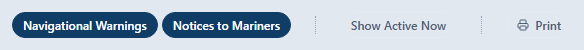
-
Navigational Warnings and Notices to Mariners switch each kind of message on or off. A button that is on is dark. Both are on when you first open the site. One of them is always on: the last one that is on cannot be switched off, so to see only notices, switch the warnings off, and the other way round. The site remembers your choice in your browser.
-
Show Active Now is described in Show Active Now, and the dates of a message.
-
Print makes a document of the messages you are looking at, ready to print or save (see Printing).
2.1.1. Show Active Now, and the dates of a message
Show Active Now is there to keep only the messages that are in force at this moment. In this version of the site, pressing the button does not change the list: with it pressed or not, you see every published message of the kinds you chose. The site does not remember the button either: it is always off when the site opens.
So read the dates in the message itself to know when it applies:
-
The text of the message says when the work, the exercise or the change takes place, for example "In the period 1 October - 12 October 2026, dredging will be carried out". Some messages have a part called Time for this.
-
The line at the end of a message ends with the day the authority published it, for example "Published 14 September 2026".
Dates are given in the time zone of the authority that published the message.
2.2. The Details view
Details is the view the site opens on. It shows the full text of every message, one under the other, under the name of the sea area it is in.
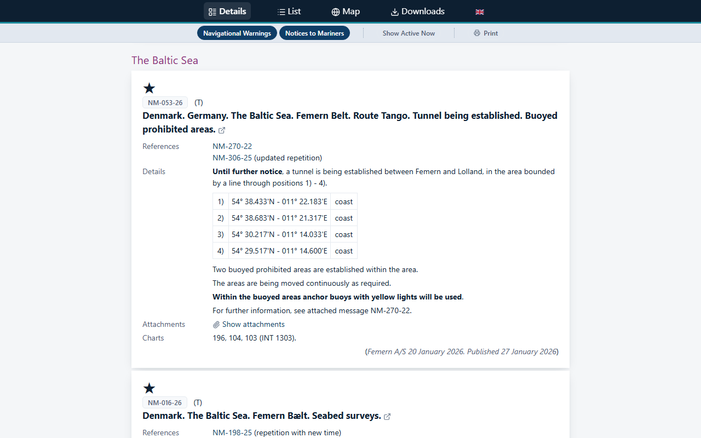
Each message is a card with all its text (see Reading a message). Click its title to open the message in a window of its own, with its map (see The message window). The small arrow after the title shows that it opens.
2.3. The List view
List shows one line for each message, under the name of the sea area it is in: the message’s number and its title. It is the quickest way to see what is published for an area.
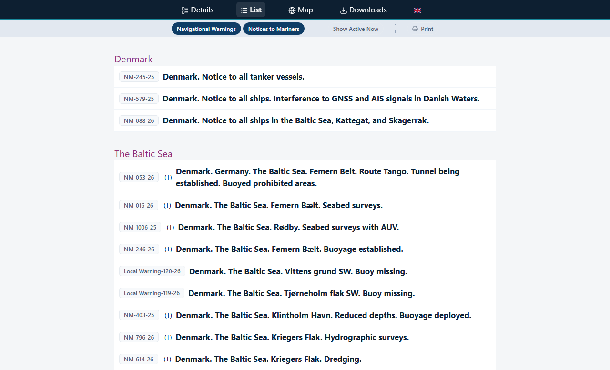
Click a line to open the message in a window of its own (see The message window).
2.4. Reading a message
A message has these parts, from the top. A part that the message does not have is left out.
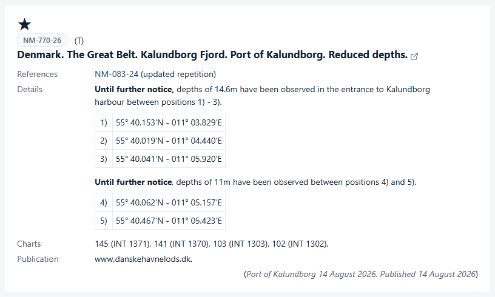
- Pictures above the text
-
An authority can place a picture or a short video above the text of a message, for example a section of a chart. It can also place one below the text.
- The star (★)
-
A star above the number marks a notice based on original information, as printed Notices to Mariners mark it.
- The number
-
The message’s number, in a grey box, for example NM-811-26 or NW-348-26. A message without a number is named by its kind instead, for example Coastal NW or Temp. NM. After the number, (T) marks a temporary notice and (P) a preliminary one.
A message that the authority has cancelled carries the mark Cancelled beside its number, and one that has run out carries the mark Expired. A permanent notice that has run out has no mark: it has simply come to the end of its life. The site’s own lists hold published messages only, so you meet cancelled and expired messages in a publication you browse (see Browsing a publication), when you follow a reference from another message, and when you open a link to one message (see Links to one message).
- The title
-
The title names the country, the sea area, the place and what has happened, for example Denmark. Kattegat. Skagen. Light unlit.
- References
-
Other messages this message refers to, by their number, with what the reference is: (repetition), (repetition with new time), (updated repetition) or (cancelled). Click a number to open that message (see The message window).
- Details, Time, Positions, Note, Prohibition, Signals
-
The text of the message, in one or more parts. The name on the left says what kind of part it is, and is written only once for parts of the same kind that follow each other. A part may start with a short subject in bold.
Positions are usually listed in a table, each with a number, for example
1) 55° 07.432'N - 012° 14.871'E: degrees and minutes of latitude and longitude. The map in the message’s window marks the same positions with the same numbers. A message may also give a position on a line of its own, without a number. - Attachments
-
Files that belong to the message, such as a chart section or a document. Click Show attachments to list them, and a file’s name to open it in a new tab. Hide attachments folds the list away again.
- Charts
-
The numbers of the charts the message concerns. An international chart number follows in brackets, for example 103 (INT 1303).
- Publication
-
The nautical publications the message concerns, such as a list of lights.
- The source and the date
-
The last line, in brackets, says who reported the matter and when, and the day the authority published the message, for example (Port of Kalundborg 14 August 2026. Published 14 August 2026).
2.5. The message window
A message opens in a window over the page when you click its title in the Details view, its line in the List view, or its symbol on the map.
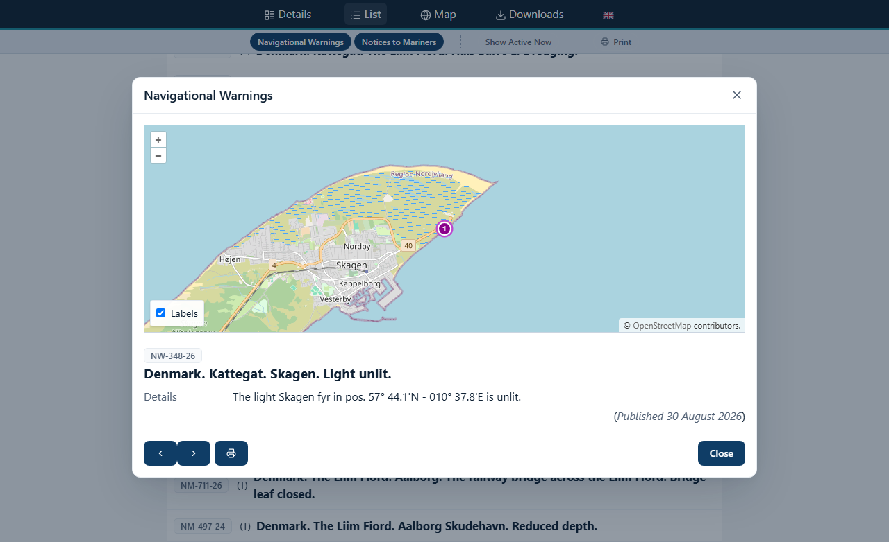
The window’s title says which kind of message it is, Navigational Warnings or Notices to Mariners. Under it:
-
A map of the message’s positions, when the message has any (see The map of one message). A message with a picture placed above its text shows the picture instead.
-
The whole text of the message, as described in Reading a message.
At the bottom of the window:
-
The two arrow buttons step to the previous and the next message of the list you opened the window from, so you can read through the list without closing the window. They are not there when the message is not in that list, for example when you followed a reference to it.
-
back appears when you have followed a reference to another message, and takes you back to the message you came from.
-
The printer button makes a document of this one message (see Printing).
-
Close closes the window. The cross in the top right corner and the Esc key do the same.
2.5.1. Links to one message
Each message has an address of its own, which opens the site with that message’s window open, for example:
https://nautiskinformation.brs2.dk/messages/details/message/NM-811-26The last part of the address is the message’s number. Send such a link to someone who needs to read the message, or bookmark it. The link keeps working after the message has been cancelled or has expired: the window then shows the message with its mark, Cancelled or Expired (see Reading a message), so check the mark before you rely on an old link. When the number is wrong, or the message has never been published, the window says so: Message NM-811-26 is not available.
Closing the window leaves you on the Details view.
2.6. Printing
The site prints from documents in PDF that the Niord server makes. Each opens in a new tab of your browser, where you can print it or save it.
-
Print in the filter bar makes a document of the list you are looking at: the kinds of message you chose, and the areas you chose when the filter bar has area buttons. While you browse a publication, it prints that publication’s messages. Show Active Now makes no difference to it. The button is greyed out while the list is loading, and when the list is empty.
-
The printer button at the bottom of a message’s window makes a document of that one message.
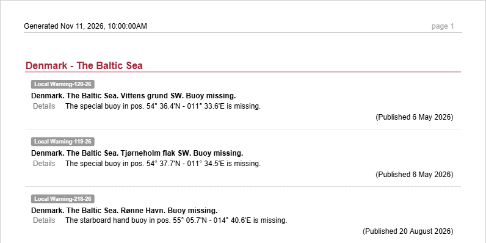
The printed list is grouped by sea area, as the Details view is, and says at its top when it was made.
The server makes only a few documents at a time for the public. When many readers print at the same moment, the new tab may show an error instead of the document: close it and try again a little later.
2.7. When the list does not load
While the site reads the messages, a turning circle shows where they will appear. If the site cannot read them, for example because the connection was lost, it says so in red: Failed to load messages. That does not mean that there are no messages: reload the page, or try again later.
3. The Map
3.1. The Map view
Map in the menu bar shows the messages on a map: the same messages as the Details and List views, the ones you chose in the filter bar. When it opens, the map is placed so that every message on it is in view.
The pictures in this chapter show the map with only Navigational Warnings switched on in the filter bar (see Choosing which messages you see), so that the symbols stand apart. With Notices to Mariners switched on as well, the map holds many more symbols.
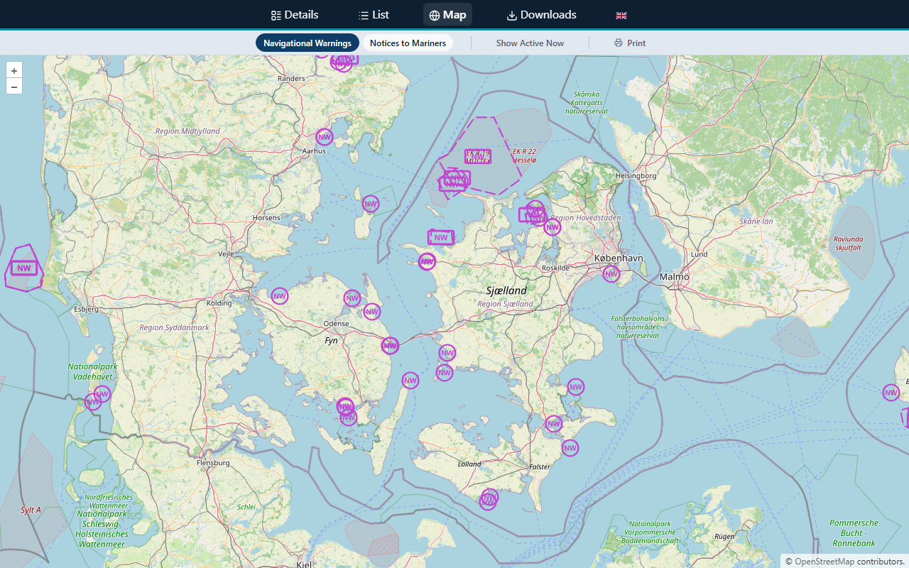
To move around the map:
-
Drag the map to move it.
-
Zoom in and out with the + and − buttons in the top left corner, with the wheel of the mouse, or with two fingers on a touch screen.
The map is drawn from OpenStreetMap, whose credit is in the bottom right corner. It is not a nautical chart: use it to find the messages, and your charts to navigate.
3.2. What the symbols mean
Every message is drawn in magenta, in the way an electronic chart draws navigational warnings, and carries the letters of its kind: NW for a Navigational Warning, NM for a Notice to Mariners.
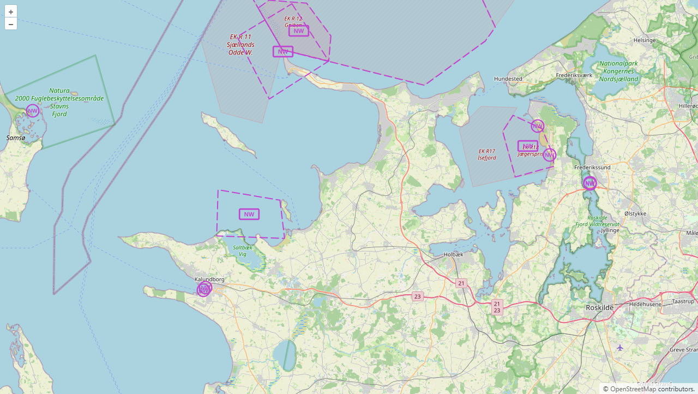
| What you see | What it is |
|---|---|
A circle with NW or NM in it |
A message about one position, such as a light or a buoy, or about a few positions, one circle for each. |
A dashed line with boxed NW or NM tags along it |
A message about a line, such as a cable, a pipeline or a channel. The tags follow the line, so you see what it is wherever you look along it. |
A dashed outline with one boxed NW or NM tag inside |
A message about an area, such as a work area or a firing area. The area is not filled in, so you can see the map under it. |
A paler dashed outline around a message |
The area around a position or a line that the message says is affected, for example the distance to keep from a vessel at work. |
Where many messages lie close together, such as in a harbour, their symbols overlap. Zoom in to tell them apart, or point at them (see Pointing at and opening a message).
3.3. Pointing at and opening a message
Rest the mouse pointer on a symbol, or inside an area, to see which messages are there: a small box names up to three of them, each with its number and title. When there are more, the box ends with the number of the others, for example and 9 more messages.
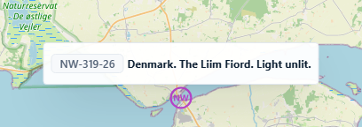
Click a symbol, or inside an area, to open the message in its window (see The message window). Where several messages lie at the same place, the click opens the first one the box names; the arrow buttons of the window then step through the messages of the map in the order of the list.
3.4. Messages without a position
Some messages have no position to draw, for example a notice to all ships in a country’s waters. The Map view lists them in a panel called Additional Messages, in the top right corner of the map, with their numbers and titles. Click one to open it in its window. The panel is only there when some of the messages you chose have no position: in the pictures every warning has one, so the panel is not shown.
Minimize folds the panel up to its title, so that it leaves the map free; Maximize opens it again.
3.5. The map of one message
The window of a message with positions has a map of its own, above the text, which shows that message alone (see the picture in The message window).
-
The map shows the message’s symbols, and places a numbered circle on each position. The numbers are the same as in the position tables of the text, so you can find position 3) of the text on the map.
-
When a position has a name in the text, such as the name of a buoy or a light, the name is written under its circle.
-
Labels, in the bottom left corner, hides the numbers and the names, and shows them again.
Some sites can also show a sea chart on the map of a message. They then have a second box in the bottom left corner, Sea Chart, which shows and hides it.
4. Downloads and Publications
Downloads in the menu bar lists the publications of the authority: for example the weekly Notices to Mariners, their annexes, a yearly almanac and other nautical publications. Each publication is listed under the name of its category, with a book in front of its title.
The page has two tabs: Active NtM and Publications, with the publications that are current now, and Historical NtM and Publications, with the ones of a period you choose.
4.1. Current publications
Active NtM and Publications is the tab the page opens on. It lists the publications that are public at this moment.
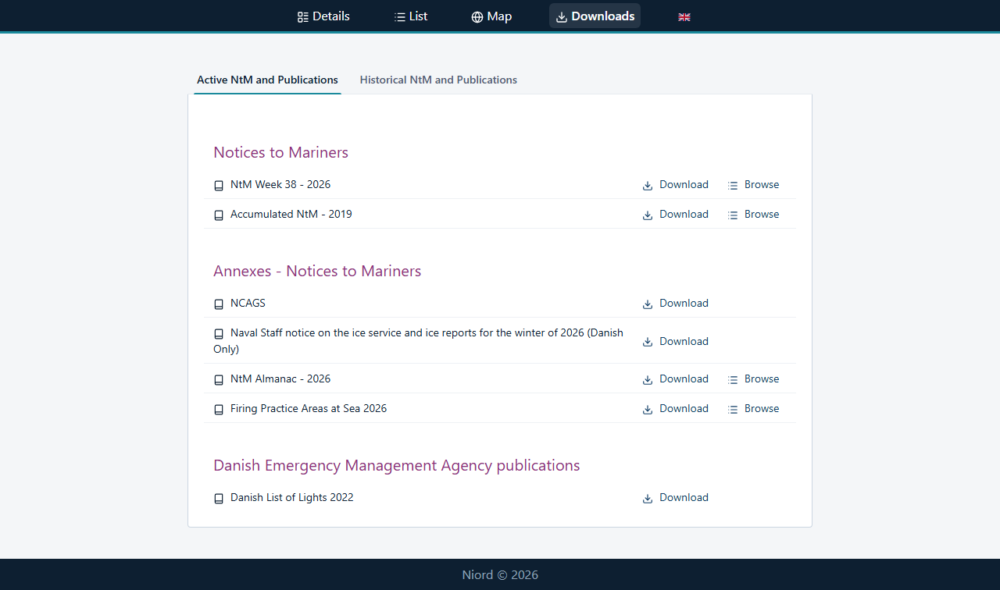
Each publication has one or two links:
-
Download opens the publication in a new tab: its document, usually a PDF, which you can read, save or print there, or, for a publication another body publishes, that body’s web page.
-
Browse is there for a publication made of messages, such as a weekly edition of the Notices to Mariners. It shows the messages of that edition on the site itself (see Browsing a publication).
4.2. Older publications
Historical NtM and Publications finds the publications of an earlier period.
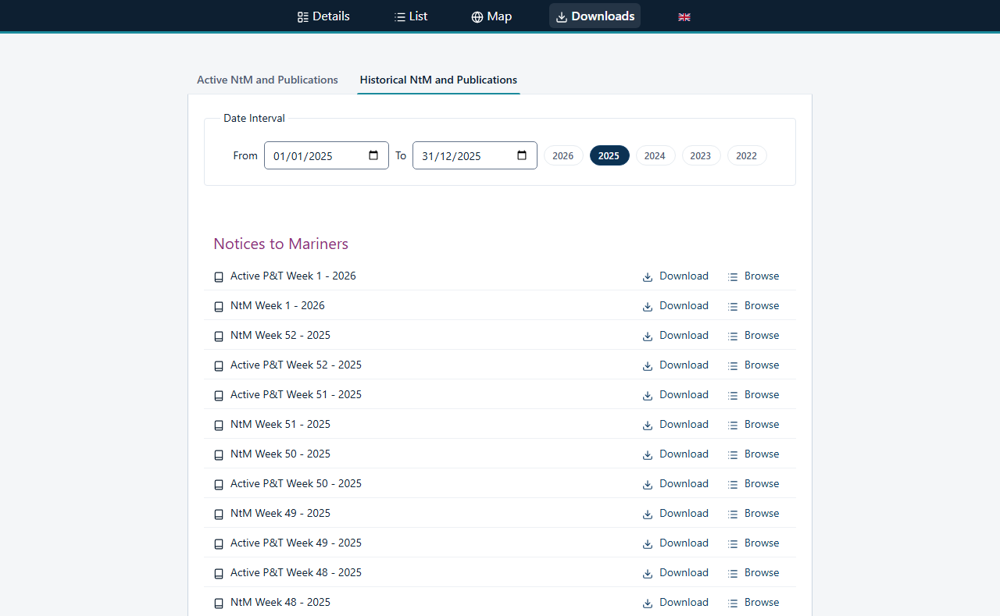
-
Click the tab Historical NtM and Publications.
-
Under Date Interval, choose the period: either click one of the year buttons, for this year and each of the four years before it, or fill in a date under From and a date under To.
-
The list shows the publications that were public at some time in that period. It appears when both dates are filled in, and changes when you change either of them.
The pressed year button shows which year the list is for. The dates are days in the time zone of the authority, so a year runs from 1 January to 31 December there.
4.3. Browsing a publication
Browse opens the Details view with the messages of that publication only, the way they were published in it.
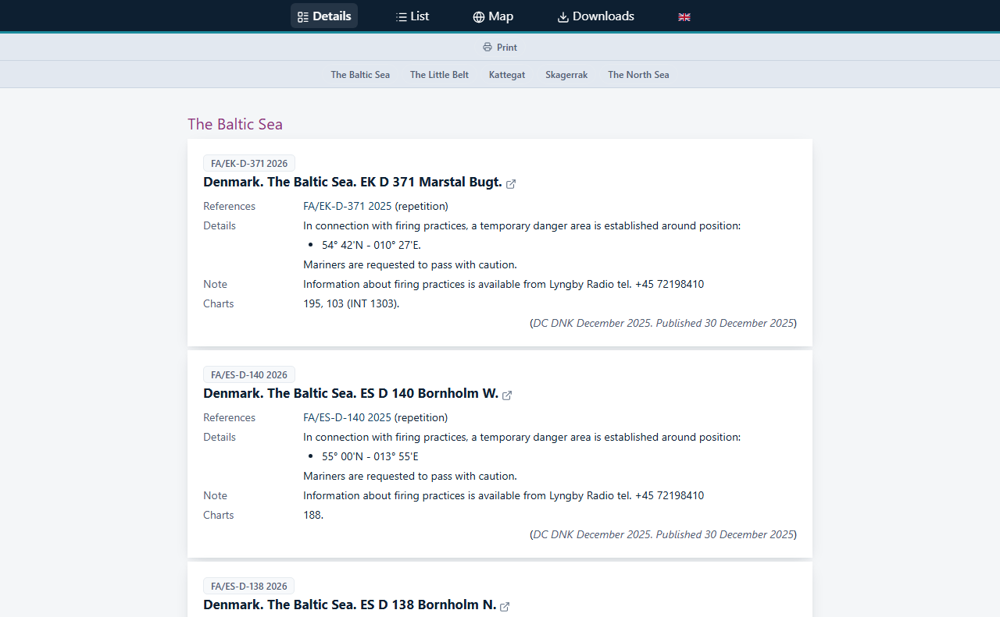
While you browse a publication, the filter bar changes:
-
The buttons Navigational Warnings, Notices to Mariners and Show Active Now are not there: the list is the publication’s, whatever you had chosen before.
-
Print prints the publication’s messages (see Printing).
-
A row of area buttons shows the sea areas the messages are in. Click an area to see only its messages; click more areas to add them, and click an area again to leave it out.
A publication may hold messages that have since been cancelled or have run out. A cancelled message is marked Cancelled beside its number, and one that has run out Expired, except a permanent notice, which has no mark (see Reading a message).
Nothing on the page names the publication you are browsing, so keep track of which one you opened. The List and Map buttons of the menu bar, and Details as well, take you back to the site’s current messages; to see the publication again, click Browse on the Downloads page once more.
5. On a Phone
The site works on a phone or a tablet the same way as on a computer, in the phone’s own browser. Nothing has to be installed. On a narrow screen a few things look different.
5.1. The menu bar and the messages
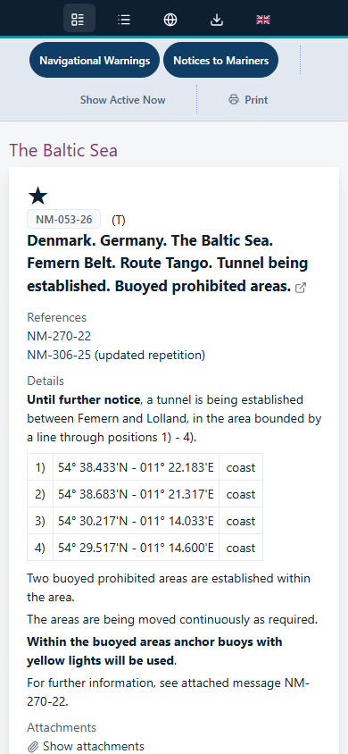
-
The menu bar shows only the symbols of the four views, without their names: a list beside boxes for Details, a list for List, a globe for Map and a downward arrow for Downloads. The flags of the languages follow them.
-
The buttons of the filter bar take two rows.
-
In a message, the name of each part (Details, Charts and so on) stands above its text instead of beside it.
-
A table of positions that is wider than the screen keeps each position on one line, and scrolls sideways inside the message: swipe the table to see the rest of it.
5.2. A message’s window
A message’s window takes most of the screen, with the map at the top and the text under it. Scroll the window to read the whole message; the buttons are at the bottom.
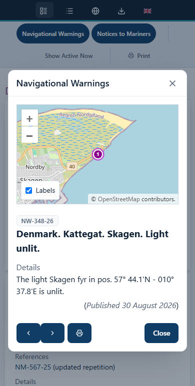
5.3. The map
On a phone the panel Additional Messages lies across the top of the map. Click Minimize to fold it up to its title, which leaves the map free; Maximize opens it again. Move the map with one finger and zoom with two. Even folded up, the panel lies over the map’s + button, so zoom with your fingers. The picture shows navigational warnings only, each with a position, so the panel is not there.
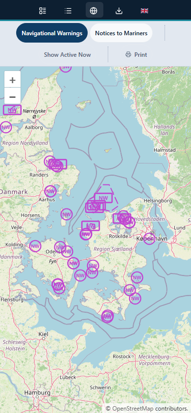
On a phone there is no mouse pointer to rest on a symbol: tap the symbol to open its message.
6. Showing the Messages on Your Own Web Site
A harbour, a marina or a sailing club can show the messages on its own web site with the teaser: a small map of the current warnings and notices, with a banner that invites the reader to click it. A click opens the public site’s Map view in a new tab.
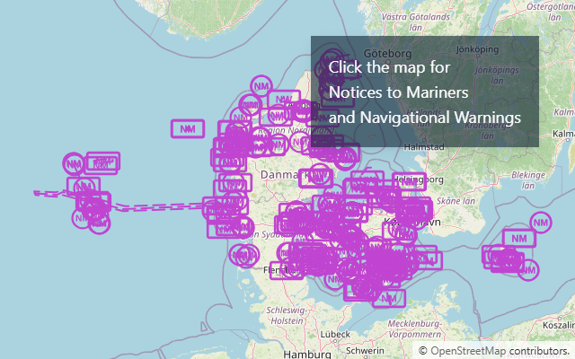
6.1. Adding the teaser to a page
The teaser is the page /teaser of the public site, which your page shows in a frame. Add this to
the HTML of your page, where the map should be:
<iframe src="https://nautiskinformation.brs2.dk/teaser?lang=en"
title="Navigational Warnings and Notices to Mariners"
width="480" height="320" style="border: 0"></iframe>Choose the width and the height to fit your page: the map fills the frame, and places itself so that the messages are in view.
The address of the teaser takes two settings:
lang-
The language of the banner and of the messages, for example
lang=en, one of the languages the public site is offered in. Without it, or with a language the site does not offer, the teaser is normally in the site’s own language, so name the language you want. area-
The sea area whose messages the teaser shows, by the area’s id in Niord or by its MRN, a name of the form
urn:mrn:.... Ask the authority that runs the site which areas it has. Without it, the teaser shows the messages of the first area the site has, or every message when the site has no areas of its own.
Settings are joined with &, for example /teaser?lang=en&area=urn:mrn:iho:country:dk.
The site’s operator decides which web sites may show the teaser in a frame. If the frame on your page stays empty, ask the authority to allow your site.
An address of the teaser written for the earlier public site, such as /#/teaser?lang=en or
/teaser#?lang=en, still works.